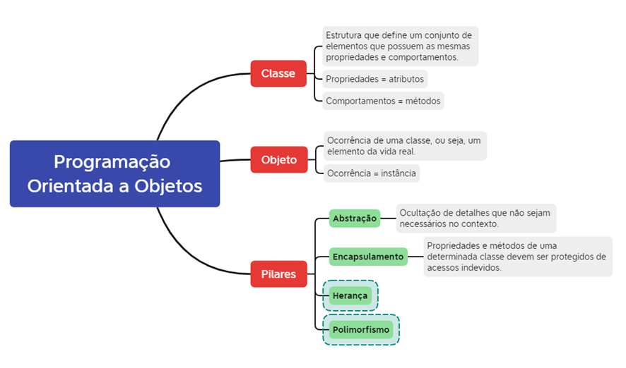

Conceito
A Programação Orientada a Objetos (POO) é um paradigma baseado na organização do código em objetos que possuem atributos e métodos.

A Programação Orientada a Objetos (POO) é um paradigma baseado na organização do código em objetos que possuem atributos e métodos.